Teorie grafů
https://homel.vsb.cz/~dor028/Teorie_grafu.pdf
Definice grafu
- Graf G je uspořádaná dvojice
G = (V, E), kde V je neprázdná množina vrcholů a E je množina hran - množina (některých) dvouprvkových podmnožin množiny - Prvky množiny V nazýváme vrcholy
- Prvky množiny E nazýváme hrany
Orientované grafy a multigrafy
- Orientovaných grafem rozumíme uspořádanou dvojici
G = (V, E), kde V je neprázdná množina vrcholů a množina orientovaných hran jeE ⊆ V x V - V nakreslení znázorňujeme orientované hrany šipkami
- Obecnější pojem než orientovaný graf je multigraf
Princip sudosti
- Součet stupňů v grafu je vždy sudý a je roven dvojnásobku počtu hran
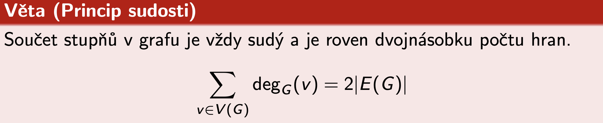
Věta Havlova-Hakimiho
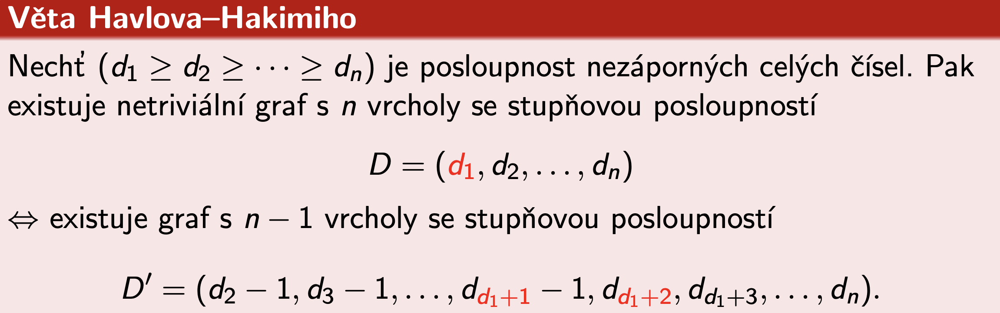
Indukovaný podgraf
- Vznikne tak, že vezmu vybrané uzly z původního grafu a zachovám jen ty hrany, které mezi nimi už v původním grafu existovaly
- Žádné nové hrany neměním, jen “zdědím” vztahy mezi těmi vybranými uzly
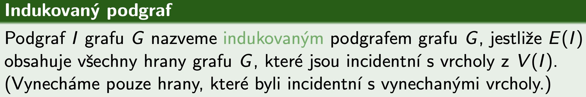
Isomorfismus grafů
- Grafy, které jsou navzájem ekvivalentní, liší se pouze jiným označením vrcholů a hran a jiným způsobem zakreslení
- Počty vrcholů grafů musí být stejné
- Počty hran grafů musí být shodné
- Počty vrcholů daných stupňů musí být stejné
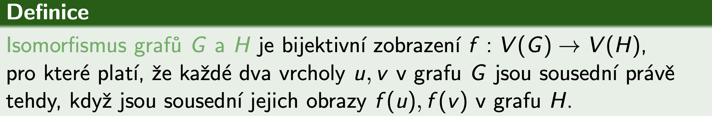
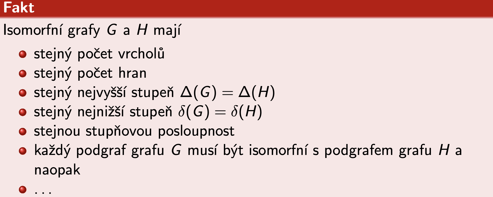
Sled grafu
- “Procházka” po uzlech, kde jdu z jednoho uzlu do druhého po hranách
- Můžu chodit dokola, vracet se na stejné uzly a také přecházet stejné hrany vícekrát
- Vrchol V je dosažitelný z vrcholu U, jestliže v grafu existuje sled z vrcholu U do vrcholu V
- Souvislý graf musí mít pro každé 2 vrcholy U, V je vrchol V dosažitelný z vrcholu U
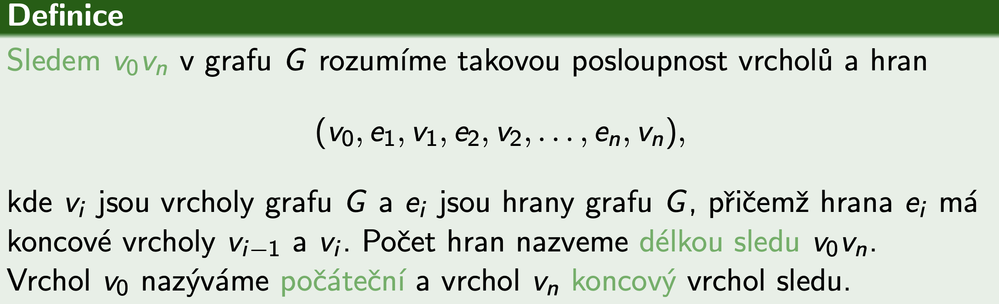
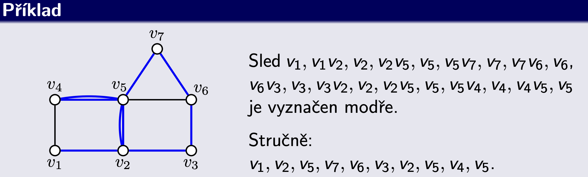
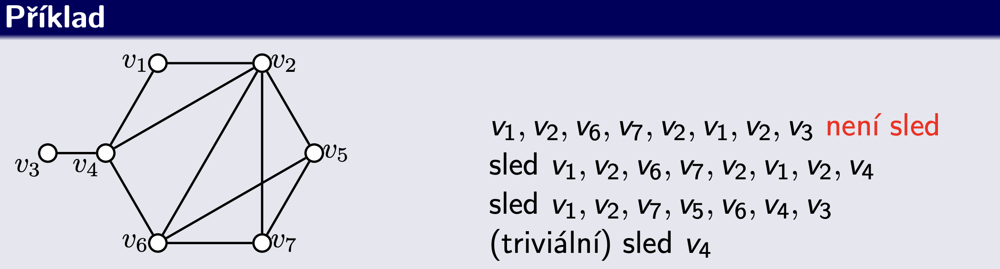
Tah a cesta grafu
- Tah grafu je sled, ve kterém se neopakují žádné hrany
- Cesta je sled, ve kterém se neopakují žádné vrcholy, tedy ani hrany
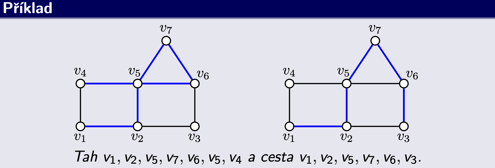
Komponenta grafu
- Samostatná část grafu, kde jsou všechny uzly propojené, ale na žádné uzly mimo tuto část se nedostanu
- Je to každý maximální souvislý podgraf grafu G
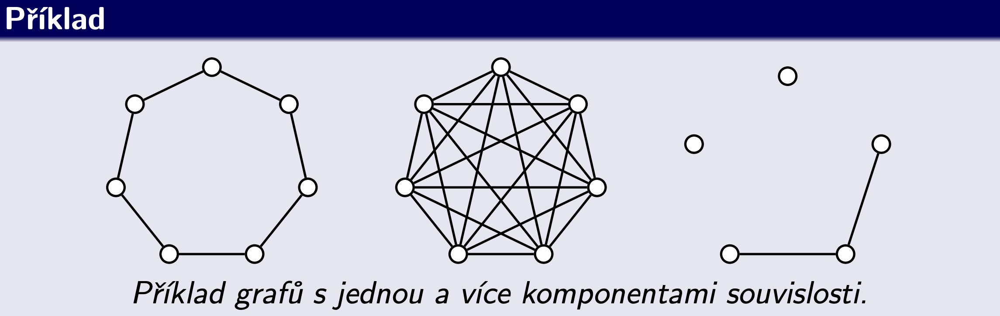
Vyšší stupně souvislosti
- V praxi nás může zajímat nejen, jestli existuje spojení (cesta) mezi vrcholy, ale také, jestli bude existovat spojení v případě výpadků některých vrcholů
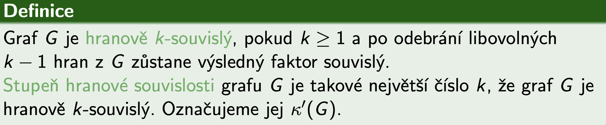
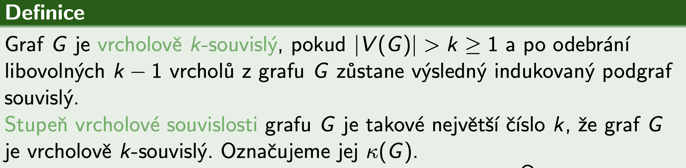
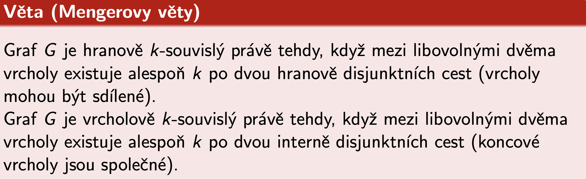
Eulerovský graf
- Pokud začínám a končím ve stejném vrcholu = uzavřený eurelovský tah = eulerovský graf
- Pokud ale končím jinde než jsem začal = otevřený eulerovský tah
- Říkáme, že takový graf lze nakreslit jedním tahem
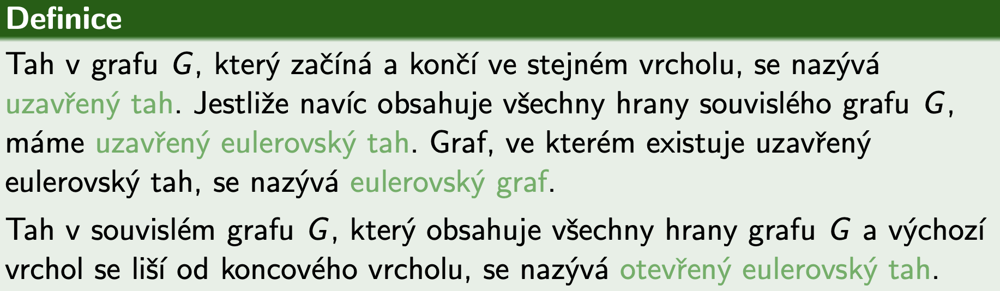
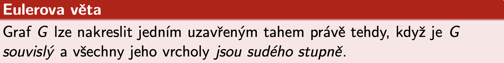
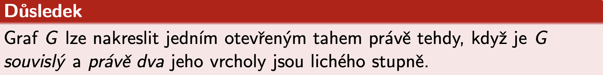
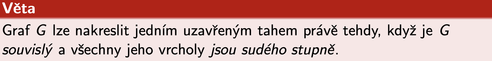
Hamiltonovský graf
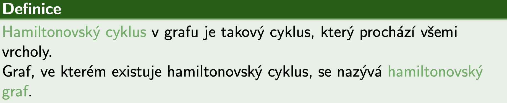
Vzdálenost grafu
- Pro neohodnocené grafy můžeme předpokládat, že délka každé hrany je 1
- Nejkratší sled je vždy cestou
- Ohodocený graf je ten, která má každou hranu ohodnocenou
- Kladně ohodnocený graf je ten, který má všechny ohodnocení kladné
- Délka ohodnoceného sledu je součet vah všech jeho hran
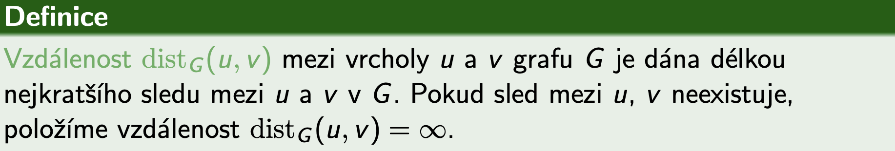
Dijkstrův algoritmus
- Využívá se pro hledání nejkratší (ohodnocené) cesty mezi dvěma vrcholy váženého (kladně ohodnoceného) grafu
- Najde vzdálenosti z jednoho vrcholu do ostatních (místo mezi všemi dvojicemi vrcholů)
- Reálné využití například pro vyhledávání autobusových spojení